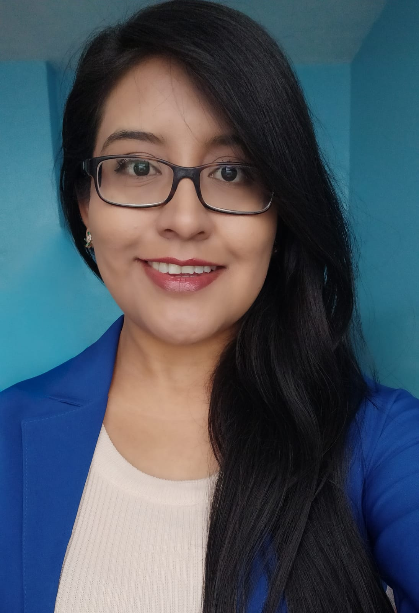

Investigación en Machine Learning
Antisana 15
Participación en una investigación sobre el retroceso glaciar mediante modelos predictivos y datos climáticos.
- Python
- KNN
- Random Forest
Software · Datos · Aprendizaje
Estudiante de Ingeniería de Software
Desarrollo de software, análisis de datos y aprendizaje continuo.

Una selección de mi trabajo
Investigación en Machine Learning
Participación en una investigación sobre el retroceso glaciar mediante modelos predictivos y datos climáticos.

Desarrollo de software
Gestión de clientes, mascotas, citas e inventario.
Un poco sobre mí
Hola, mi nombre es Fernanda Rueda, estudiante de la carrera de Ingeniería de Software en la Escuela Politécnica Nacional y puedo describirme como una persona amigable, perseverante y entusiasta. Me gusta aprender nuevos temas, disfrutar de las cosas sencillas de la vida, capacitarme para mejorar mis habilidades, enfrentarme a nuevos retos y estoy comprometida con mi formación profesional y con mi desarrollo personal.